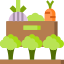

Интернет-портал о красивых
и урожайных грядках
Лайфхаки и личный опыт садоводства от наших читателей
Основной заголовок статьи (Н1)
Для детской требуется много места, особенно, если ребенок не один. Множество игрушек, вещей, книг и прочего. Поэтому лишние квадратные метры не помешают. Освободившееся пространство можно использовать как зону для игр, хранения вещей.
Второй заголовок (Н2)
Ремонт занял 3 недели. Самым трудоемким и пыльным этапом ремонтных работ оказался снос стены между комнатами, выравнивание и шпаклевка остальных стен.
- На выравнивание стен ушло 10 мешков выравнивающей смеси.
- Стену из гранитных камешков, арматуры и бетона
- Выбивали отбойным молотком: сначала выбивали бетон и камни
Затем за работу взялись сантехники: перенесли трубы, соединили сваркой и зашили их в пол. Далее последовала отделка стен и пола плиткой. Установка сантехники заняла всего 1 день.
- На выравнивание стен ушло 10 мешков выравнивающей смеси.
- Стену из гранитных камешков, арматуры и бетона
- Выбивали отбойным молотком: сначала выбивали бетон и камни
| Первый по левому краю | Кол-во | Третий столбец | Четвертый |
|---|---|---|---|
| Безусловно это правильный выбор | 5 | что-нибудь ещё | что-нибудь ещё |
| Опционы предлагают значительно более | 124 | для примера | для примера |
| Высокую доходность, фиксируемые риски | 152 | и показа | и показа |
Съедобными грибами обычно называют грибы, которые можно употреблять в пищу без риска для здоровья, при этом, не подвергая

Съедобными грибами обычно называют грибы, которые можно употреблять в пищу без риска для здоровья, при этом, не подвергая

Съедобными грибами обычно называют грибы, которые можно употреблять в пищу без риска для здоровья, при этом, не подвергая
Рекомендуем по теме
Обсуждения
Сергей Михайлович
Съедобными грибами обычно называют грибы, которые можно употреблять в пищу без риска для здоровья, при этом, не подвергая их предварительной тепловой
21 апреля 2019
Сергей Михайлович
Съедобными грибами обычно называют грибы, которые можно употреблять в пищу без риска для здоровья, при этом, не подвергая их предварительной тепловой
21 апреля 2019
Заголовок сео-текста для главной
Грядки в теплице располагаются на усмотрение потребителя, П-образно, Ш-образно или три раздельных грядки. Это уже на усмотрение потребителя. А вот «заправка» грядки выполняется во всех случаях одинаково. На дно, первым слоем, укладывается крупный органический мусор (ветки, бревнышки, трухлявые ненужные доски и палки).
Вторым слоем мелкая органика (трава, листва). Третьим – картон. Четвертым – сантиметров двадцать компоста. Пятый заключительный – плодородная почва. Такой «слоеный пирог» будет хорош не только как долгоиграющая подкормка растениям, но и как биотопливо, то есть почвенный подогрев. А это значит создание комфортных условий и соответственно хорошая отдача в виде замечательных урожаев.